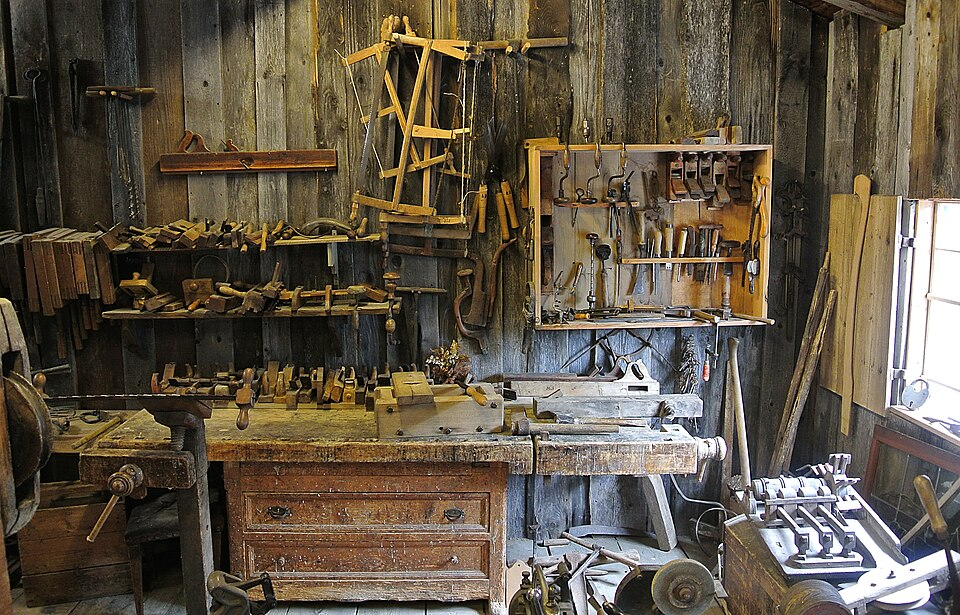
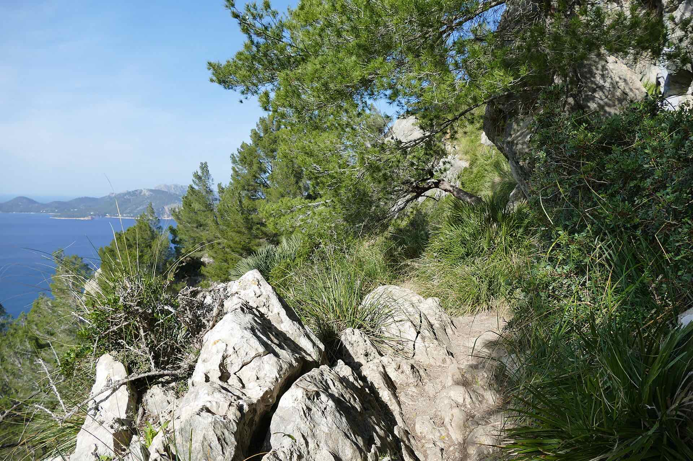
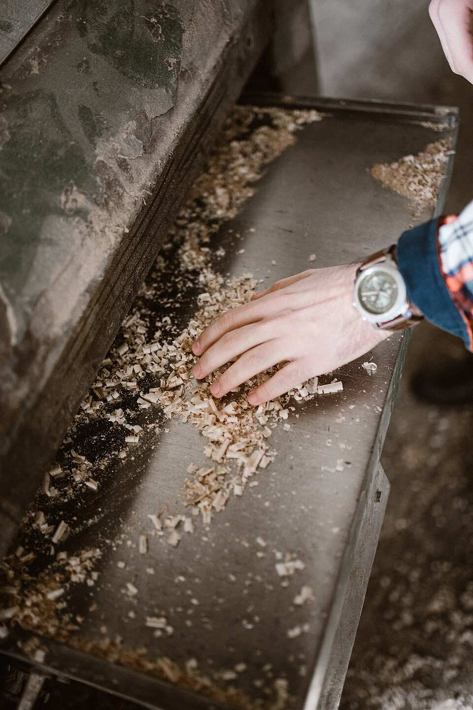
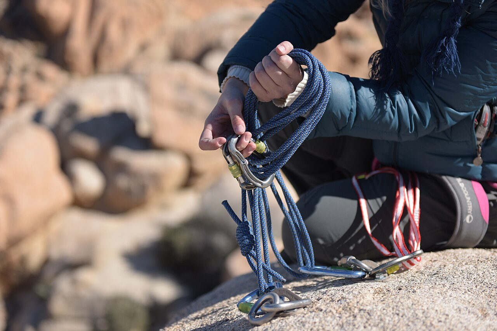
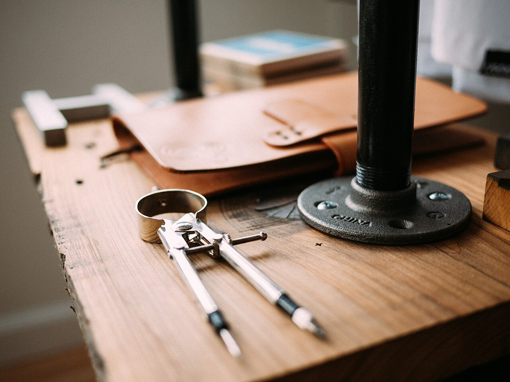

Servicio principal
Transformación de IA
Estrategia, capacitación y automatización integradas para llevar la IA de la idea al resultado.
EstrategiaCapacitaciónAutomatización


Transformación de IA para empresas que ya usan tecnología
Identificamos oportunidades reales, definimos cómo medir su impacto y acompañamos a tu equipo del diagnóstico a soluciones que pueda operar y escalar.
Una conversación exploratoria, sin costo ni compromiso. Estrategia · Capacitación · Automatización
Antes de hablar de modelos o herramientas, entendemos cómo trabaja tu empresa: qué tareas se repiten, dónde se pierde tiempo y qué quieres lograr.
Trabajo operativo y verificable que tu equipo hace a mano cada semana: revisar, copiar, clasificar, responder.
Información repartida entre herramientas, con personas haciendo de puente.
Licencias compradas y equipos improvisando, sin saber si eso mejora la productividad.
Quieren integrar IA en su ciclo de desarrollo, pero no tienen un método para hacerlo en cada fase.

Preguntas que respondemos contigo
¿En qué proceso tiene sentido usar IA? ¿Qué datos, herramientas y personas necesito? ¿Cómo justifico el costo y mido el impacto? ¿Cómo evito fugas de información y soluciones difíciles de mantener?
Cinco etapas. En cada una sabes qué hacemos, qué recibes y qué decides antes de seguir.

Servicio principal
Estrategia, capacitación y automatización integradas para llevar la IA de la idea al resultado.

Para líderes y perfiles no técnicos: usar IA con criterio en flujos de trabajo reales.
Acompañamos a equipos de software a integrar IA en cada fase del ciclo de desarrollo.
Cuando la solución necesita construirse.
Asesoría y construcción de agentes y sistemas basados en IA generativa.
Más de cinco años en empresas SaaS de EE. UU. con clientes en todo el mundo.
Sector salud: un sistema RAG agentivo para gestión documental de tratamientos médicos, con modelos locales y en la nube.
Eficiencia en el uso de LLM: costos, modelos locales y enrutamiento de modelos.
AI-SDLC: asesoría en todas las fases del ciclo de desarrollo.
Experiencia previa de quienes integran el equipo.
Consideramos riesgos como fuga de información y prompt injection, y los requisitos de datos personales y normativos que apliquen a tu contexto.

Una conversación exploratoria, sin costo ni compromiso.
Aquí se carga el calendario de Calendly para reservar la conversación de 30 minutos.
Déjanos un correo o un teléfono: con uno de los dos basta para responderte.
Paleta: roles y valores
| Rol | Primitivo | Valor | |
|---|---|---|---|
| --color-background | sand-100 | #E6DBC7 | |
| --color-surface | sand-200 | #DDD0B9 | |
| --color-text | cobalt-900 | #062B8A | |
| --color-text-muted | cobalt-600 | #3253A4 | |
| --color-primary | cobalt-900 | #062B8A | |
| --color-link | cobalt-900 | #062B8A | |
| --color-focus | cobalt-900 | #062B8A | |
| --color-border | cobalt-900 | 20 % | |
| --color-inverse-surface | cobalt-800 | #153A90 | |
| --color-inverse-text-muted | mist-300 | #AAB0BC | |
| --color-error | brick-700 | #A3271C | |
| --color-success | moss-800 | #17592F |
Tipografías
Source Serif 4
Titulares en peso 400, con tracking de −2 %. Libre Franklin para el texto, en 400 y 500: botones, etiquetas y formularios.
Logotipo: claro y oscuro
Botones y enlaces: reposo, hover, foco
Campos: reposo, foco, error, correcto